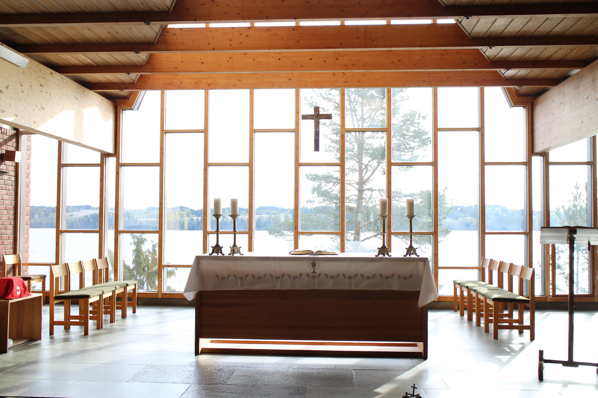
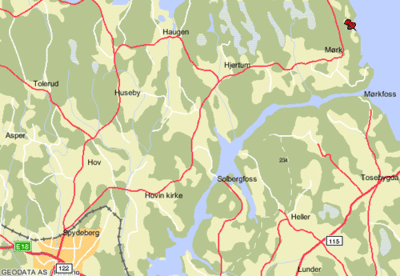

Om Mariaholm
Mariaholm kurs- og konferansesenter ligger i en skråning ned mot innsjøen Øyeren med særdeles sjarmerende omgivelser. Det er fint tur-terreng, og om sommeren er det gode bademuligheter. Bygningsmassen på Mariaholm består i hovedsak av tre deler; sovesaler, hovedbygning og kapell. Av utendørs fasiliteter finnes det grill, fotballbane, beachvolleyballbane og enda en gressbane til ballspill eller lignende. Hovedanlegget er bygget i flere plan:
- plan : To grupperom og et aktivitetsrom.
- plan : Her finner man forelesningssal som kan deles opp i to grupperom, TV-stue og toaletter.
- plan : Består av to peisestuer.
- plan : Har spisesal, garderobe og toaletter.
- plan : Har resepsjon og kontor med kopieringsmaskin, til disposisjon for leietakerne. Det er også to soverom beregnet på ledere.
Til bruk i grupperommene finnes tavler, overhead-prosjektor og lysbildeapparat og lerret. Sovesalene er delt inn i to fløyer, en for jenter og en for gutter og består av to fløyer som hver har 18 dobbeltrom (72 senger). Den ene fløyen har dusj/wc på rommet, og den andre fløyen har servant på rommet og dusj/wc i korridor. Det flotteste bygget er alikevel kapellet som er særdels vakkert og gir utsikt utover Øyeren.
Hvor?
Gateadresse
Mariaholm
Stegenveien 1143
1820 Spydeberg
Telefon
69 83 50 32
Epost
Mariaholm@katolsk.noRutebeskrivelse fra Spydeberg stasjon
- Kryss jernbaneovergangen.
- Etter 80 m, sving til høyre inn på Stegenveien.
- Etter 11,4km, sving til høyre til Mariaholm.